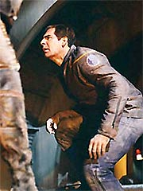
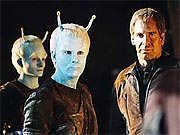

|
MANCHETE
DO EPISÓDIO
Saga
da formação da Federação volta
em grande estilo com Shran e Soval
Episódio
anterior | Próximo
episódio
Sinopse:
Andorianos e Vulcanos estão no meio de um conflito armado pela posse de um planeta classe-D próximo à fronteira entre o espaço dos dois mundos. Depois de capturar três soldados Vulcanos, o líder Andoriano Shran recebe um pedido de cessar-fogo de seu inimigo, mas decide só aceitar conversar se tiver como mediador alguém neutro, em quem ele possa confiar: o 'pele-rosada' Jonathan Archer.
Ao saber da exigência de Shran, os Vulcanos requisitam à Frota Estelar a presença de Archer no planeta em disputa, Paan Mokar'a, ou Wehtaan, o nome Andoriano. Chegando lá, o capitão da Enterprise recebe a bordo o embaixador Soval, que recita todo o histórico do conflito.
Segundo ele, os Andorianos haviam iniciado a terraformação daquele astro há cerca de um século. Após vários conflitos, os Vulcanos decidiram expulsar os alienígenas dali, sob a alegação de estarem construindo uma base militar estrategicamente próxima de Vulcano. A única evidência é a recusa Andoriana em permitir inspeções. Em 2097 os Andorianos são expulsos e um acordo é estabelecido. Por duas ocasiões a disputa quase levou os planetas rivais à guerra. E agora os Andorianos tentaram retomar Wehtaan, o que levou ao presente combate.
Archer decide descer e contatar Shran, acompanhado apenas de T'Pol. Chegando lá, eles são recebidos com alguma hostilidade pelos Andorianos, e Shran informa suas exigências: a completa abolição dos tratados de 2097 e o reconhecimento de Wehtaan como território Andoriano.
 O capitão diz que não pretende participar das negociações apenas como pombo-correio, o que faz com que Shran exija um encontro com Soval, alguém que tivesse autoridade suficiente para negociar em nome dos Vulcanos. Archer diz que vai tentar levar o embaixador até Shran, mas antes ele precisa de uma garantia de que os Andorianos estão mesmo tentando negociar a paz. O capitão sugere que Shran liberte os três prisioneiros, como sinal de boa-fé. O Andoriano concorda em liberar apenas um deles, apesar dos protestos de sua subalterna, Tarah -- ela abertamente discorda da política de negociação de seu líder.
De volta à Enterprise, Archer enfrenta outra batalha diplomática para convencer Soval a se encontrar com Shran. Relutantemente, o Vulcano concorda, mas no caminho de volta ao planeta, o shuttlepod que leva Archer, T'Pol e o embaixador à superfície é abatido e obrigado a fazer um pouso de emergência.
No chão, Soval sugere que eles busquem abrigo em um posto Vulcano, mas Archer pretende manter sua promessa a Shran e levar o embaixador até ele. O trio é novamente confrontado por fogo inimigo -- claramente de origem Andoriana. Soval leva um tiro, mas o ferimento não é fatal. Os dois Vulcanos dão cobertura para que Archer possa imobilizar os inimigos. Ao fazê-lo, o capitão descobre que o ato de rebeldia é ordem de Tarah.
Em órbita, naves Andorianas se aproximam do planeta, com o objetivo de abastecer suas equipes em terra. Os Vulcanos, por sua vez, pretendem impedir a chegada de suprimentos a todo custo. Mas Charles Tucker, no comando da Enterprise, decide impedir o conflito, colocando a Enterprise entre as naves inimigas. Ele diz que vai atirar em qualquer um que tome uma atitude agressiva enquanto o capitão Archer estiver na superfície.
Archer e Tarah entram num confronto corporal e são surpreendidos por Shran. Embora a Andoriana tente convencer seu superior de que o capitão foi o primeiro a abrir fogo, as evidências contra ela -- inclusive o ferimento de Soval -- são incontestáveis. Shran ordena que ela seja presa, sob as ameaças da traidora, que diz haver outros entre os Andorianos que não defendem a paz com Vulcano.
Com a ajuda de Archer, Shran e Soval iniciam negociações. Todos saem parcialmente insatisfeitos -- o que, lembra o capitão, é o sinal de um bom acordo. Há muito trabalho a ser feito até a conclusão de um novo tratado, mas os primeiros passos rumo à paz certamente foram dados.
Comentários:
"Cease Fire" é mais um esforço na construção do arco que eventualmente levará à fundação da Federação Unida de Planetas. Mais que isso, trata-se do melhor episódio até agora na série a lidar com o tema.
É bem verdade que o segmento não apresenta muitas surpresas. Seguindo uma sequência mais ou menos definida e previsível de eventos, o roteiro até entrega fácil quem é o "vilão" dessa história -- Tarah, a rebelde subalterna de Shran.
Neste caso, porém, não há mesmo charme em grandes surpresas. A aposta é num dos aspectos mais charmosos da premissa pré-Clássica de
Enterprise: sua noção "histórica". Assim como ninguém precisa de uma grande reviravolta ou surpresa ao estudar o Império Romano para se interessar pela disciplina "História", ninguém depende do inesperado para gostar de um segmento como
"Cease Fire". A História, com "H" maiúsculo, fala mais alto que qualquer outra coisa.
E o que mais agrada no episódio é justamente essa qualidade narrativa coerente com o que vimos até agora. Além de apresentar uma sequência bastante interessante aos eventos apresentados em
"The Andorian Incident" e "Shadows of P'Jem" (ambos da primeira temporada), há uma clara evolução na situação "geopolítica" das três grandes civilizações envolvidas -- Andoria, Vulcano e a emergente Terra.
 Finalmente
Enterprise assume de forma definitiva sua "missão" de contar as origens da Federação. É importante nesse sentido o reconhecimento do almirante Forrest ao notar que Archer "é a coisa mais próxima a um embaixador que temos lá fora". Espero ver mais dessa "qualidade" no capitão da Enterprise nos próximos episódios e temporadas.
Aliás, Archer é o grande destaque do segmento. O espírito de liderança e confiança do capitão está crescendo a olhos vistos, o que também parece ser parte integrante do "grande plano" dos produtores para o personagem -- a idéia é vê-lo se desenvolvendo como um grande líder ao longo da série, em vez de já ter "nascido" assim, como aconteceu com os outros protagonistas de
Jornada nas Estrelas.
Dá gosto de ver o capitão aqui. Ele apresenta o equilíbrio certo entre diplomacia, astúcia, força física e sagacidade para conduzir com perfeição uma situação delicada entre dois povos rivais. A forma com que ele dobra seu antigo algoz, Soval, é especialmente saborosa, dado o confronto anterior dos dois em
"Shockwave, Part II" -- e a chance de "conviver" um pouco mais com o embaixador Vulcano também faz muito por transformá-lo num personagem mais simpático e tridimensional.
Na outra ponta, Shran continua com o mesmo charme habitual. Seu papel, entretanto, foi aprimorado pela importância da situação. Nos segmentos anteriores, ele parecia apenas um líder guerrilheiro de segundo escalão, não um líder da Guarda Imperial Andoriana. Aqui conduzindo uma missão importante e claramente comandando um contingente respeitável, Shran parece ser mais próximo do poder em Andoria do que poderíamos supor inicialmente -- o que é bom para o personagem, para o ator e para a audiência.
Alguns desenvolvimentos interessantes dos personagens também são oferecidos a T'Pol e a Trip. A Vulcana ganha especialmente num diálogo com Soval, em que reconhece o potencial da missão da Enterprise, sua lealdade à tripulação humana e sua motivação para seguir adiante. A única coisa que podemos lamentar é a total omissão dos recentes eventos relatados em
"Stigma". Obviamente Soval deveria estar sabendo da "novela de T'Pol", com síndrome Pa'nar, e não seria surpreendente vê-lo admoestando a única Vulcana defensora da presença humana no espaço.
Apesar disso, a situação toda passa batida -- o que não chega a estragar o episódio, mas mostra uma dificuldade inerente da série em reconhecer, semana após semana, os desenvolvimentos mais recentes (outro exemplo notável desse tipo de ocorrência foi a falta de menção dos eventos de
"The Andorian Incident" em "Breaking the
Ice", o episódio seguinte, só para mostrar a reincidência da série na falha).
E Trip mostra pela primeira vez a combinação certa de maturidade e espírito de comando ao se colocar entre as naves Andorianas e Vulcanas. Além de deixar claro aos dois povos que os humanos "vieram para ficar", o engenheiro demonstra que suas experiências traumáticas recentes (em
"Precious Cargo" e "Dawn") ajudaram-no a desenvolver uma veia de líder.
O episódio mantém um ritmo fluido e constante, auxiliado por uma boa direção de David Straiton. Talvez o único ponto fraco relevante da trama seja realmente Tarah. Prejudicada pela evidente etiqueta "Eu sou a vilã da história" pregada em sua testa pelo roteiro de Chris Black, Suzie Plakson não consegue se destacar como a primeira Andoriana fêmea a aparecer num episódio de
Jornada nas Estrelas.
Os efeitos especiais são bonitos, ainda que convencionais (exceto pela espetacular sequência do pouso forçado do shuttlepod no planeta, que realmente salta aos olhos), e a primeira aparição de uma nave de design Andoriano acaba sendo decepcionante -- eu esperaria algo mais distintivo para uma das raças mais atraentes, ainda que pouco destacadas, da franquia.
Só pela quantidade de "firsts" citada nos últimos dois parágrafos, dá para notar que
"Cease Fire" é mesmo um momento "histórico", em mais de um sentido. E a alegria é ver que o final pede claramente pela continuidade deste arco, que está se provando uma das melhores coisas em
Enterprise. Se os produtores apostassem mais na fundação da Federação, na evolução das Guerras Romulanas e na progressão da Guerra Fria Temporal, certamente a audiência seria muito mais tolerante com o ocasional episódio inócuo destacando os alienígenas da semana.
Se a série ainda não mudou de foco para apostar em histórias mais amplas e impactantes, pelo menos são episódios como
"Cease Fire" que mantêm a porta aberta para que os produtores possam mudar de idéia. Se a idéia for mais perseguida, pode até acabar tornando
Enterprise a série que todos os fãs gostariam de ver.
Citações:
Tucker - "I don't like pushing the engines this hard. The fuel injectors are running at 110%."
("Eu não gosto de forçar tanto os motores. Os injetores de combustível estão operando a 110%.")
T'Pol - "They are rated for 120."
("Eles foram projetados para 120.")
Tucker - "And my underwear is flame retardant, that doesn't mean I'm going to light myself on fire just to prove it!"
("E minha roupa é anti-chamas, mas isso não significa que eu vou me enfiar no fogo só para provar isso!")
Archer - "Maybe we’re not out here to just scan comets and meet new species, maybe we’re out here to prove that humanity is ready to join a much larger community. I intend to do that whether the Vulcans like it or not."
("Talvez não estejamos aqui fora apenas para rastrear cometas e conhecer novas espécies, talvez estejamos aqui fora para provar que a humanidade está pronta para se juntar a uma comunidade maior. Eu pretendo fazer isso, os Vulcanos gostando ou não.")
Archer - "No offence, but my ears are less likely to draw fire than yours."
("Sem ofensa, mas minhas orelhas têm menos probabilidade de atrair fogo do que as de vocês.")
Soval - "What is their fixation with our ears?"
("Qual é a fixação deles com nossas orelhas?")
T'Pol - "I believe they are envious."
("Eu acho que eles têm inveja.")
Archer - "I believe someone once defined a compromise as a solution that neither side is happy with."
("Eu acredito que alguém definiu um acordo como uma solução em que nenhum dos lados fica feliz.")
Soval - "Captain, your presence here has not been overly meddlesome."
("Capitão, sua presença aqui não foi por demais intrusiva.")
Shran - "I think he likes you, pink-skin!"
("Acho que ele gosta de você, pele-rosada!")
Archer - "I wouldn't go that far."
("Eu não iria tão longe.")
Trivia:
 Suzie Plakson é uma velha conhecida de
Jornada nas Estrelas. Ela interpretou a Vulcana Selar em "The Schizoid Man"
(A Nova Geração) e a embaixadora Klingon K'Ehleyr em "The Emissary" e
"Reunion" (ambos também de A Nova Geração). Em Voyager, ela interpretou a mulher de Q, em
"The Q and the Grey".
Suzie Plakson é uma velha conhecida de
Jornada nas Estrelas. Ela interpretou a Vulcana Selar em "The Schizoid Man"
(A Nova Geração) e a embaixadora Klingon K'Ehleyr em "The Emissary" e
"Reunion" (ambos também de A Nova Geração). Em Voyager, ela interpretou a mulher de Q, em
"The Q and the Grey".
O episódio apresenta a primeira aparição de uma fêmea Andoriana e de uma nave estelar dessa espécie.
A produção do episódio foi de 21 de novembro a 3 de dezembro de 2002, com uma pausa de dois dias para o Dia de Ação de Graças.
Jeffrey Combs comentou o episódio. "Eles parecem ter elevado meu personagem. No primeiro eu era meio que um líder renegado de um bando de rebeldes não-tão-felizes, e agora parece que eu estou liderando um abndo maior de rebeldes não-tão-felizes. Sou mais um estrategista olhando sobre mapas e negociando numa mesa."
Ficha
técnica:
Escrito por Chris Black
Direção de David Straiton
Exibido em 12/02/2003
Produção:
041
Elenco:
Scott
Bakula como Jonathan Archer
Jolene Blalock como
T'Pol
John Billingsley
como Phlox
Anthony Montgomery
como Travis Mayweather
Connor Trinneer como
Charlie 'Trip' Tucker III
Dominic Keating como
Malcolm Reed
Linda Park como Hoshi Sato
Elenco convidado:
Jeffrey Combs como Shran
Suzie Plakson como Tarah
Gary Graham como Soval
John Balma como Muroc
Vaughn Armstrong como almirante Forrest
Zane Cassidy como soldado Andoriano
Christopher Shea como Telev
Episódio
anterior | Próximo
episódio
|